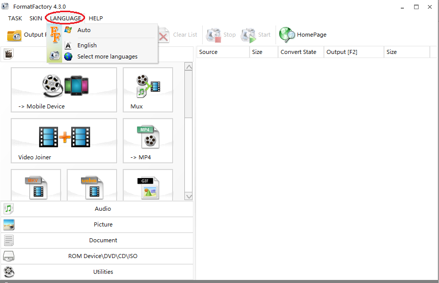

The format factory is committed to helping users better solve the problem of file usage, and now has a large number of loyal users in the fields of music, video, pictures, etc., and is in a leading position in the software industry, and maintains a trend of rapid development.
Format Factory is a type of video and audio editor. Format Factory has many functions: It supports nearly all multimedia foramts; it repairs damaged vedio files; it slims multimedia files; it simplifies the process of backup; it is multilingual, supporting 62 national langues, etc.
Now get a overview of Format Factory!
Visit Format Factory and download it.
Check the general settings of Format Factory.

